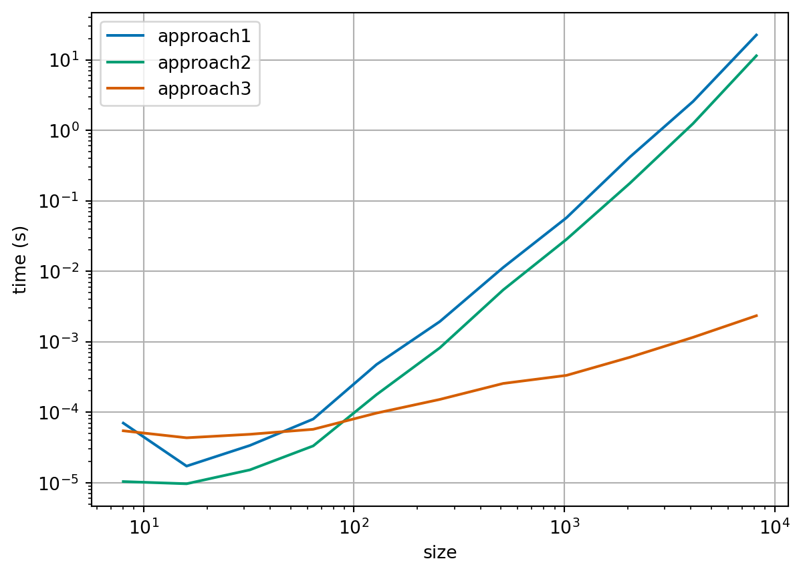
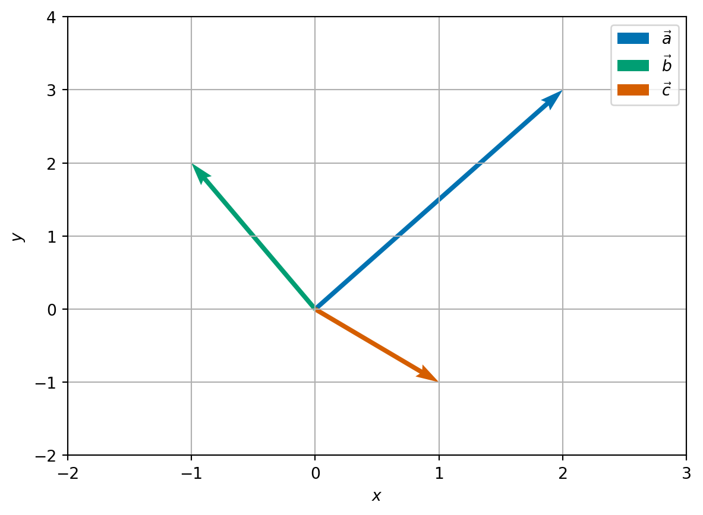
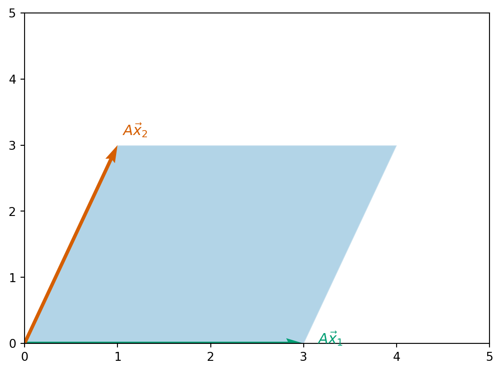
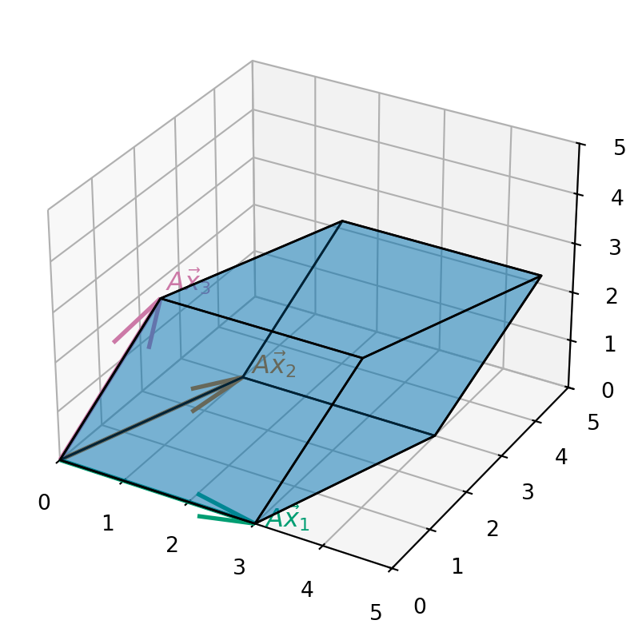

def approach1(A, b):
"""
Solve the system of linear equations Ax = b by applying the inverse of A
"""
A_inv = np.linalg.inv(A)
x = A_inv @ b
return x
def approach2(A, b):
"""
Solve the system of linear equations Ax = b through numpy's linear solver
"""
x = np.linalg.solve(A, b)
return x
def approach3(A_sparse, b):
"""
Solve the system of linear equations Ax = b through scipy's sparse linear
solver
"""
x = sp.sparse.linalg.spsolve(A_sparse, b)
return x3 Introduction to systems of linear equations
3.1 Definition of systems of linear equations
Given an \(n \times n\) matrix \(A\) and an \(n\)-vector \(\vec{b}\), find the \(n\)-vector \(\vec{x}\) which satisfies: \[\begin{equation} \label{eq:sle} A \vec{x} = \vec{b}. \end{equation}\]
We can also write \(\eqref{eq:sle}\) as a system of linear equations: \[\begin{align*} \text{Equation 1:} && a_{11} x_1 + a_{12} x_2 + a_{13} x_3 + \cdots + a_{1n} x_n & = b_1 \\ \text{Equation 2:} && a_{21} x_1 + a_{22} x_2 + a_{23} x_3 + \cdots + a_{2n} x_n & = b_2 \\ \vdots \\ \text{Equation i:} && a_{i1} x_1 + a_{i2} x_2 + a_{i3} x_3 + \cdots + a_{in} x_n & = b_i \\ \vdots \\ \text{Equation n:} && a_{n1} x_1 + a_{n2} x_2 + a_{n3} x_3 + \cdots + a_{nn} x_n & = b_n. \end{align*}\]
Notes:
The values \(a_{ij}\) are known as coefficients.
The right-hand side values \(b_i\) are known and are given to you as part of the problem.
\(x_1, x_2, x_3, \ldots, x_n\) are not known and are what you need to find to solve the problem.
3.2 Can we do it?
Our first question might be: Is it possible to solve \(\eqref{eq:sle}\)?
We know a few simple cases where we can answer this question very quickly:
- If \(A = I_n\), the \(n \times n\) identity matrix, then we can solve this problem: \[\vec{x} = \vec{b}.\]
- If \(A = O\), the \(n \times n\) zero matrix, and \(\vec{b} \neq \vec{0}\), the zero vector, then there are infinitely many solutions to the problem: \[ O \vec{x} = \vec{0} \neq \vec{b} \quad \text{for any vector} \quad \vec{x}. \]
- If \(A\) is invertible, with inverse \(A^{-1}\), then we can solve this problem: \[ \vec{x} = A^{-1} \vec{b}. \] However, in general, this is a terrible idea and we will see algorithms that are more efficient than finding the inverse of \(A\).
Remark 3.1. One way to solve a system of linear equations is to compute the inverse of \(A\), \(A^{-1}\), directly, then the solution is found through matrix multiplication: \(\vec{x} = A^{-1} \vec{b}\). Here we compare two simple and one more specialised implementations:

There are tools to help us determine when a matrix is invertible which arise naturally when considering about what \(A \vec{x} = \vec{b}\) means! We have to go back to the basic operations on vectors.
There are two fundamental operations you can do on vectors: addition and scalar multiplication. Consider the vectors: \[\begin{align*} \vec{a} = \begin{pmatrix} 2 \\ 1 \\ 2 \end{pmatrix}, \quad \vec{b} = \begin{pmatrix} 1 \\ 2 \\ 4 \end{pmatrix}, \quad \vec{c} = \begin{pmatrix} 4 \\ 2 \\ 6 \end{pmatrix}. \end{align*}\] Then, we can easily compute the following linear combinations: \[\begin{align} \label{eq:vector-linear-comb-a} \vec{a} + \vec{b} & = \begin{pmatrix} 3 \\ 3 \\ 6 \end{pmatrix} \\ \label{eq:vector-linear-comb-b} \vec{c} - 2 \vec{a} & = \begin{pmatrix} 0 \\ 0 \\ 2 \end{pmatrix} \\ \label{eq:vector-linear-comb-c} \vec{a} + 2 \vec{b} + 2 \vec{c} &= \begin{pmatrix} 12 \\ 9 \\ 22 \end{pmatrix}. \end{align}\] Now if we write \(A\) for the \(3 \times 3\)-matrix whose columns are \(\vec{a}, \vec{b}, \vec{c}\): \[\begin{align*} A = \begin{pmatrix} && \\ \vec{a} & \vec{b} & \vec{c} \\ && \end{pmatrix} = \begin{pmatrix} 2 & 1 & 4 \\ 1 & 2 & 2 \\ 2 & 4 & 6 \end{pmatrix}, \end{align*}\] then the three equations \(\eqref{eq:vector-linear-comb-a}\), \(\eqref{eq:vector-linear-comb-b}\), \(\eqref{eq:vector-linear-comb-c}\), can be written as \[\begin{align*} \vec{a} + \vec{b} & = 1 \vec{a} + 1 \vec{b} + 0 \vec{c} = A \begin{pmatrix} 1 \\ 1 \\ 0 \end{pmatrix}, \\ \vec{c} - 2\vec{a} & = -2 \vec{a} + 0 \vec{b} - 2 \vec{c} = A \begin{pmatrix} -2 \\ 0 \\ 1 \end{pmatrix}, \\ \vec{a} + 2 \vec{b} + 2 \vec{c} & = 1 \vec{a} + 2 \vec{b} + 2 \vec{c} = A \begin{pmatrix} 1 \\ 2 \\ 2 \end{pmatrix}. \end{align*}\] In other words,
We can write any linear combination of vectors as a matrix-vector multiply,
or if we reverse the process,
We can write matrix-vector multiplication as a linear combination of the columns of the matrix.
This rephrasing means that solving the system \(A \vec{x} = \vec{b}\) is equivalent to finding a linear combination of the columns of \(A\) which is equal to \(b\). So, our question about whether we can solve \(\eqref{eq:sle}\), can also be rephrased as: does there exist a linear combination of the columns of \(A\) which is equal to \(\vec{b}\)? We will next write this condition mathematically using the concept of span.
3.2.1 The span of a set of vectors
Definition 3.1 Given a set of vectors of the same size, \(S = \{ \vec{v}_1, \ldots, \vec{v}_k \}\), we say the span of \(S\) is the set of all vectors which are linear combinations of vectors in \(S\): \[\begin{equation} \mathrm{span}(S) = \left\{ \sum_{i=1}^k x_i \vec{v}_i : x_i \in \mathbb{R} \text{ for } i = 1, \ldots, k \right\}. \end{equation}\]
Example 3.1 Consider three new vectors \[\begin{align*} \vec{a} = \begin{pmatrix} 2 \\ 3 \end{pmatrix} \quad \vec{b} = \begin{pmatrix} -1 \\ 2 \end{pmatrix} \quad \vec{c} = \begin{pmatrix} 1 \\ -1 \end{pmatrix} \end{align*}\]

Let \(S = \{ \vec{a} \}\), then \(\mathrm{span}(S) = \{ x \vec{a} : x \in \mathbb{R} \}\). Geometrically, we can think of the span of a single vector to be an infinite straight line which passes through the origin and \(\vec{a}\).
Let \(S = \{ \vec{a}, \vec{b} \}\), then \(\mathrm{span}(S) = \mathbb{R}^2\). To see this is true, we first see that \(\mathrm{span}(S)\) is contained in \(\mathbb{R}^2\) since any \(2\)-vectors added together and the scalar multiplication of a \(2\)-vector also form a \(2\)-vector. For the opposite inclusion, consider an arbitrary point \(\vec{y} = \begin{pmatrix} y_1 \\ y_2 \end{pmatrix} \in \mathbb{R}^2\) then \[\begin{align} \nonumber \frac{2 y_1 + y_2}{7} \vec{a} + \frac{-3 y_1 + 2 y_2}{7} \vec{b} = \frac{2 y_1 + y_2}{7} \begin{pmatrix} 2 \\ 3 \end{pmatrix} - \frac{-3 y_1 + 2 y_2}{7} \begin{pmatrix} -1 \\ 2 \end{pmatrix} \\ = \begin{pmatrix} \frac{4 y_1 + 2 y_2}{7} + \frac{3 y_1 - 2 y_2}{7} \\ \label{eq:y-combo} \frac{6 y_1 + 3 y_2}{7} + \frac{-6 y_1 + 4 y_2}{7} \end{pmatrix} = \begin{pmatrix} y_1 \\ y_2 \end{pmatrix} = \vec{y}. \end{align}\] This calculation shows, that we can always form a linear combination of \(\vec{a}\) and \(\vec{b}\) which results in \(\vec{y}\).
Let \(S = \{ \vec{a}, \vec{b}, \vec{c} \}\), then \(\mathrm{span}(S) = \mathbb{R}^2\). Since \(\vec{c} \in \mathrm{span}(\{\vec{a}, \vec{b}\})\), any linear combination of \(\vec{a}, \vec{b}, \vec{c}\) has an equivalent combination of just \(\vec{a}\) and \(\vec{b}\). In formulae, we can see that by applying the formula from \(\eqref{eq:y-combo}\), we have \[\begin{align*} \vec{c} = \frac{1}{7} \vec{a} - \frac{5}{7} \vec{b}. \end{align*}\] So we have, if \(\vec{y} \in \mathrm{span}(S)\), then \[\begin{align*} \vec{y} = x_1 \vec{a} + x_2 \vec{b} + x_3 \vec{c} & \Rightarrow \vec{y} = (x_1 + \frac{1}{7} x_3) \vec{a} + (x_2 - \frac{5}{7} x_3) \vec{b}, \end{align*}\] so \(\vec{y} \in \mathrm{span}(\{\vec{a}, \vec{b}\})\). Conversely, if \(\vec{y} \in \mathrm{span}(\{\vec{a}, \vec{b}\})\), then \[\begin{align*} \vec{y} = x_1 \vec{a} + x_2 \vec{b} & \Rightarrow \vec{y} = x_1 \vec{a} + x_2 \vec{b} + 0 \vec{c}. \end{align*}\] So the span of \(S = \mathrm{span}(\{\vec{a}, \vec{b}\}) = \mathbb{R}^2\). Notice that we this final linear combination of \(\vec{a}, \vec{b}\) and \(\vec{c}\) to form \(\vec{y}\) is not unique.
Our first statement is that \(\eqref{eq:sle}\) has a solution if \(\vec{b}\) is in the span of the columns of \(A\). However, as we saw with Example 3.1, Part 3, we are not guaranteed that the linear combination is unique! For this we need a further condition.
3.2.2 Linear independence
Definition 3.2 Given a set of vectors of the same size, \(S = \{\vec{v}_1, \ldots, \vec{v}_k \}\), we say that \(S\) is linearly dependent, if there exist numbers \(x_1, x_2, \ldots x_k\), not all zero, such that \[\begin{align*} \sum_{i=1}^k x_i \vec{v}_i = \vec{0}. \end{align*}\] The set \(S\) is linearly independent if it is not linearly dependent.
Exercise 3.1 Can you write the definition of a linearly independent set of vectors explicitly?
Example 3.2 Continuing from Example 3.1.
Let \(S = \{ \vec{a}, \vec{b} \}\), then \(S\) is linearly independent. Indeed, let \(x_1, x_2\) be real numbers such that \[\begin{align*} x_1 \vec{a} + x_2 \vec{b} = \vec{0}, \end{align*}\] then, \[\begin{align*} 2 x_1 - x_2 & = 0 && 3 x_1 + 2 x_2 & = 0 \end{align*}\] The first equation says that \(x_2 = 2 x_1\), which when substituted into the second equation gives \(3 x_1 + 4 x_1 = 7 x_1 = 0\). Together this implies that \(x_1 = x_2 = 0\). Put simply this means that if we do have a linear combination of \(\vec{a}\) and \(\vec{b}\) which is equal zero, then the corresponding scalar multiples are all zero.
Let \(S = \{ \vec{a}, \vec{b}, \vec{c} \}\), then \(S\) is linearly dependent. We have previously seen that: \[\begin{align*} \vec{c} = \frac{1}{7} \vec{a} - \frac{5}{7} \vec{b}, \end{align*}\] which we can rearrange to say that \[\begin{align*} \frac{1}{7} \vec{a} - \frac{5}{7} \vec{b} - \vec{c} = \vec{0}. \end{align*}\] We see that the definition of linear dependence is satisfied for \(x_1 = \frac{1}{7}, x_2 = -\frac{5}{7}, x_3 = -1\) which are all nonzero.
So linear independence removes the multiplicity (or non-uniqueness) in how we form linear combinations! The ideas of linear independence and spanning lead us to the final definition of this section.
3.2.3 When vectors form a basis
Definition 3.3 We say that a set of \(n\)-vectors \(S\) is a basis of a set of \(n\)-vectors \(V\) if the span of \(S\) is \(V\) and \(S\) is linearly independent.
Example 3.3
From Example 3.1, we have that \(S = \{ \vec{a}, \vec{b} \}\) is a basis of \(\mathbb{R}^2\).
Another (perhaps simpler) basis of \(\mathbb{R}^2\) are the coordinate axes: \[\begin{align*} \vec{e}_1 = \begin{pmatrix} 1 \\ 0 \end{pmatrix} \quad \text{and} \quad \vec{e}_2 = \begin{pmatrix} 0 \\ 1 \end{pmatrix}. \end{align*}\]
Later, when we work with at eigenvectors and eigenvalues we will see that there are other convenient bases (plural of basis) to work with.
We phrase the idea that the existence and uniqueness of linear combinations together depend on the underlying set being a basis mathematically in the following Theorem:
Theorem 3.1 Let \(S\) be a basis of \(V\). Then any vector in \(V\) can be written uniquely as a linear combination of entries in \(S\).
Example 3.4
From the main examples (Example 3.1) in this section, we have that \(S = \{ \vec{a}, \vec{b} \}\) is a basis of \(\mathbb{R}^2\) and we already know the formula for how to write \(\vec{y}\) as a unique combination of \(\vec{a}\) and \(\vec{b}\): it is given in \(\eqref{eq:y-combo}\).
For the simpler example of the coordinate axes: \[\begin{align*} \vec{e}_1 = \begin{pmatrix} 1 \\ 0 \end{pmatrix} \quad \text{and} \quad \vec{e}_2 = \begin{pmatrix} 0 \\ 1 \end{pmatrix}, \end{align*}\] we have that for any \(\vec{y} = \begin{pmatrix} y_1 \\ y_2 \end{pmatrix} \in \mathbb{R}^2\) \[\begin{align*} \vec{y} = \begin{pmatrix} y_1 \\ y_2 \end{pmatrix} = y_1 \begin{pmatrix} 1 \\ 0 \end{pmatrix} + y_2 \begin{pmatrix} 0 \\ 1 \end{pmatrix} = y_1 \vec{e}_1 + y_2 \vec{e}_2. \end{align*}\]
Proof (Proof of Theorem 3.1). Let \(\vec{y}\) be a vector in \(V\) and label \(S = \{ \vec{v}_1, \ldots \vec{v}_k \}\). Since \(S\) forms a basis of \(V\), \(\vec{y} \in \mathrm{span}(S)\) so there exists numbers \(x_1, \ldots, x_k\) such that \[\begin{align} \label{eq:basis_pf_x} \vec{y} = \sum_{i=1}^k x_i \vec{v}_i. \end{align}\] Suppose that there exists another set of number \(z_1, \ldots z_k\) such that \[\begin{align} \label{eq:basis_pf_z} \vec{y} = \sum_{i=1}^k z_i \vec{v}_i. \end{align}\] Taking the difference of \(\eqref{eq:basis_pf_x}\) and \(\eqref{eq:basis_pf_z}\), we see that \[\begin{align} \vec{0} = \sum_{i=1}^k (x_i - z_i) \vec{v}_i. \end{align}\] Since \(S\) is linearly independent, this implies \(x_i = z_i\) for \(i = 1, \ldots, k\), and we have shown that there is only one linear combination of the vectors \(\{ \vec{v}_i \}\) to form \(\vec{y}\).
There is a theorem that says that the number of vectors in any basis of a given ‘nice’ set of vectors \(V\) is the same, but is beyond the scope of this module!
Theorem 3.2 Let \(A\) be a \(n \times n\)-matrix. If the columns of \(A\) form a basis of \(\mathbb{R}^n\), then there exists a unique \(n\)-vector \(\vec{x}\) which satisfies \(A \vec{x} = \vec{b}\).
We do not give full details of the proof here since all the key ideas are already given above.
3.2.4 Another characterisation: the determinant
Let \(\vec{e}_j\) be the (column) vector in \(\mathbb{R}^n\) which has 0 for all coefficients apart from the \(j\)th place: \[ \vec{e}_j = (0, \ldots, 0, \underbrace{1}_{\text{$j$th place}}, 0, \ldots, 0). \] Then, we can compute that for any \(n \times n\) matrix \(A\) that we have the \(i\)th component of \(A \vec{e}_j\) is given by \[\begin{align*} (A \vec{e}_j)_i = \sum_{k=1}^n A_{ik} (\vec{e}_j)_k = A_{ij}. \end{align*}\] That is that \(A \vec{e}_j\) gives the \(j\)th column of the matrix \(A\).
One geometric way to see that the columns of \(A\) form a basis is to explore the shape of polytope with edges away from the origin given by the columns of \(A\) (hyper-parallelopiped).
Example 3.5 For \(A\) given by \[ A = \begin{pmatrix} 3 & 1 \\ 0 & 3 \end{pmatrix} \] the shape is a parallelogram that looks like this:

For \(A\) given by \[ A = \begin{pmatrix} 3 & 1 & 1\\ 0 & 3 & 1 \\ 0 & 0 & 3 \end{pmatrix}, \] the shape is a parallelopiped given that looks like this:

If we are given an \(n \times n\) matrix \(A\), its \(n\) columns form a basis of \(\mathbb{R}^n\) if, and only if, the area/volume/hyper-volume of the associated hyper-parallelepiped is nonzero. Roughly speaking this follows since if the area/volume/hyper-volume is zero then two of the column vectors must point in the same direction. This property is so important that the area/volume/hyper-volume of the hyper-parallelepiped associated with the matrix \(A\) has a special name: the determinant of \(A\) and we write \(\det A\).
Definition 3.4 Let \(A\) be a square \(n \times n\) matrix.
If \(n = 2\), \[\begin{equation} \det A = \det \begin{pmatrix} a_{11} & a_{12} \\ a_{21} & a_{22} \end{pmatrix} = a_{11} a_{22} - a_{21} a_{12}. \end{equation}\]
If \(n = 3\), \[\begin{align*} \det A & = \det \begin{pmatrix} a_{11} & a_{12} & a_{13} \\ a_{21} & a_{22} & a_{23} \\ a_{31} & a_{32} & a_{33} \end{pmatrix} \\ & = a_{11} (a_{22} a_{33} - a_{23} a_{32}) - a_{12} (a_{21} a_{33} - a_{23} a_{31}) + a_{13} (a_{21} a_{32} - a_{22} - a_{31}). \end{align*}\]
For general \(n\), the determinant can be found by, for example, Laplace expansions \[ \det A = \sum_{j=1}^n (-1)^{j+1} a_{1,j} m_{1,j}, \] where \(a_{1,j}\) is the entry of the first row and \(j\)th column of \(A\) and \(m_{1,j}\) is the determinant of the submatrix obtained by removing the first row and the \(j\)th column from \(A\).
Example 3.6
Let \(A\) be given by \[ A = \begin{pmatrix} 3 & 1 \\ 0 & 3 \end{pmatrix}. \] Then we can compute that \[ \det A = 3 \times 3 - 1 \times 0 = 9 - 0 = 9. \]
Let \(A\) be given by \[ A = \begin{pmatrix} 3 & 1 & 1\\ 0 & 3 & 1 \\ 0 & 0 & 3 \end{pmatrix}. \] Then we can compute that \[\begin{align*} \det A & = 3 \times (1 \times 3 - 0 \times 3) - 1 \times (0 \times 3 - 3 \times 0) + 1 \times (0 \times 0 - 3 \times 0) \\ & = 3 \times 3 - 1 \times 0 + 1 \times 0 = 9. \end{align*}\]
Exercise 3.2 Compute the determinant of \[ \begin{pmatrix} 2 & -1 & 3 \\ 3 & 2 & -4 \\ 5 & 1 & 1 \end{pmatrix}. \]
We have been inaccurate in what we have said before. Strictly speaking the determinant we have defined here is the signed area/volume/hyper-volume of the associated hyper-parallelepiped, and we can recover the actual volume by taking \(| \det A |\).
Theorem 3.3 Let \(A\) be an \(n \times n\) matrix and \(\vec{b}\) be an \(n\)-column vector. The following are equivalent:
- \(A \vec{x} = \vec{b}\) has a unique solution.
- The columns of \(A\) form a basis of \(\mathbb{R}^n\).
- \(\det A \neq 0\).
This proof is beyond the scope of this course.
We do have the following rule for manipulating determinants too:
- Let \(A, B\) be square \(n \times n\)-matrices then \(\det (AB) = \det A \det B\).
- Let \(A\) be a square \(n \times n\)-matrix and \(c\) a real number then \(\det (cA) = c^n \det A\).
- Let \(A\) be an invertible square matrix, then \(\det (A^{-1}) = \frac{1}{\det A}\).
Exercise 3.3 Prove these three rules for manipulating determinants for \(2 \times 2\) matrices by direct calculation.
3.3 Special types of matrices
The general matrix \(A\) before the examples is known as a full matrix: any of its components \(a_{ij}\) might be nonzero.
Almost always, the problem being solved leads to a matrix with a particular structure of entries: Some entries may be known to be zero. If this is the case then it is often possible to use this knowledge to improve the efficiency of the algorithm (in terms of both speed and/or storage).
Example 3.7 (Triangular matrix) One common (and important) structure takes the form
\[ A = \begin{pmatrix} a_{11} & 0 & 0 & \cdots & 0 \\ a_{21} & a_{22} & 0 & \cdots & 0 \\ a_{31} & a_{32} & a_{33} & \cdots & 0 \\ \vdots & \vdots & \vdots & \ddots & \vdots \\ a_{n1} & a_{n2} & a_{n3} & \cdots & a_{nn} \end{pmatrix}. \]
A is a lower triangular matrix. Every entry above the leading diagonal is zero:
\[ a_{ij} = 0 \quad \text{ for } \quad j > i. \]
The transpose of this matrix is an upper triangular matrix and can be treated in a very similar manner.
Note that the determinant of a triangular matrix is simply the product of diagonal coefficients: \[ \det A = a_{11} a_{22} \cdots a_{nn} = \prod_{i=1}^n a_{ii}. \]
Example 3.8 (Sparse matrices) Sparse matrices are prevalent in any application which relies on some form of graph structure (see both the temperature, Example 1.4, and traffic network examples, Example 1.5).
The \(a_{ij}\) typically represents some form of “communication” between vertices \(i\) and \(j\) of the graph, so the element is only nonzero if the vertices are connected.
There is no generic pattern for these entries, though there is usually one that is specific to the problem solved.
Usually, \(a_{ii} \neq 0\) - the diagonal is nonzero.
A “large” portion of the matrix is zero.
- A full \(n \times n\) matrix has \(n^2\) nonzero entries.
- A sparse \(n \times n\) has \(\alpha n\) nonzero entries, where \(\alpha \ll n\).
Many special techniques exist for handling sparse matrices, some of which can be used automatically within Python (
scipy.sparsedocumentation)
What is the significance of these special examples?
In the next section we will discuss a general numerical algorithm for the solution of linear systems of equations.
This will involve reducing the problem to one involving a triangular matrix, which, as we show below, is relatively easy to solve.
In subsequent lectures, we will see that, for sparse matrix systems, alternative solution techniques are available.
3.4 Further reading
- Gregory Gundersen Why shouldn’t I invert that matrix?, 2020.